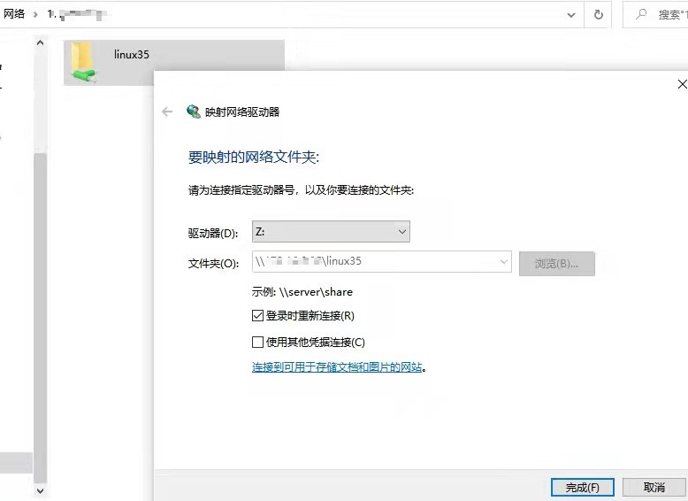

https://zhuanlan.zhihu.com/p/462724410
1、安装 samba 服务器
sudo apt update
sudo apt install samba smbclient
通过如下命令可以看到已经安装成功
$ whereis samba
output:
samba: /usr/sbin/samba /usr/lib/x86_64-linux-gnu/samba /etc/samba /usr/share/samba /usr/share/man/man7/samba.7.gz /usr/share/man/man8/samba.8.gz
2、配置 samba 服务器文件
现在选择一个目录 Samba 共享目录，比如 /home/ubuntu 。
使用 vim 打开 smb.conf 文件
sudo vim /etc/samba/smb.conf
在文件末尾添加如下几行：
[linux35]
Comment = my share directory
path = /home/ubuntu
browseable = yes
writable = yes
guest ok = yes
这里我使用的下面的配置
[ken]
path = /home/ken
browseable = yes
writeable = yes
guest ok = yes
force user = ken
create mask = 644
directory mask = 755
linux35 表示共享目录的别名，path 指定你想共享的目录， browseable 和 writable 为对该目录的操作权限。
为了避免后续使用过程中遇到的读写权限问题，通过下面这个命令，对 linux 共享路径下面的所有子目录开通权限。
chmod 777 -R /home/ubuntu
全部设置完成后，重启 Samba 服务器使设置生效。
sudo /etc/init.d/smbd restart
smb://172.18.8.108
3、windows映射到本地磁盘
服务器上的设置完成了，接下来进行 Windows 上的设置。
在windows下 win + R 组合键打开运行窗口，输入 \\ubuntu_ip，并按回车。
你会看到设置名字的文件夹，这就是 Linux 下的共享目录。
你也可以将远程目录映射为本地的磁盘，右键文件夹，选择 映射网络驱动器，
如下图所示，点击完成：

4. linux映射到本地磁盘
smb://172.1.8.8.108 映射根目录/, 或者 smb://172.1.8.8.108/ken 映射ken目录